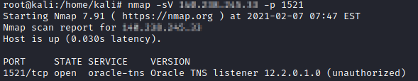

Oracle Database
Oracle is a multi-model database with a single, integrated back-end. This means that it can support multiple data models like document, graph, relational, and key-value within the database.
Default Oracle username and passwords
•
https://docs.oracle.com/cd/A91202_01/901_doc/win.901/a90163/username.htm#1150296•
http://www.petefinnigan.com/default/oracle_default_passwords.htm•
https://cirt.net/passwords?vendor=OracleOracle runs a TNS listener service that is used to interact with the database on TCP port 1521.
 Interact with TNS listenerWe can interact with this TNS listener service using
tnscmd10groot@kali:/# tnscmd10g version -h <IpHost>
if response is not an error, the SID are inside: SERVICE=(SERVICE_NAME=<SID_NAME>)
for older versions of TNS listener(before version 10g) use
tnscmd.pl written by the same author